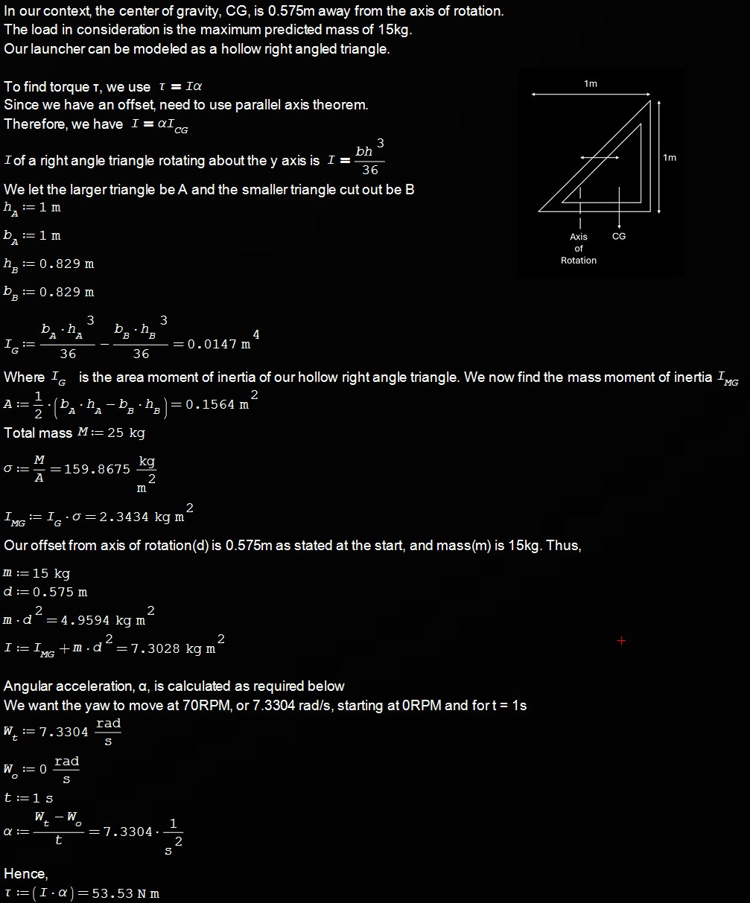
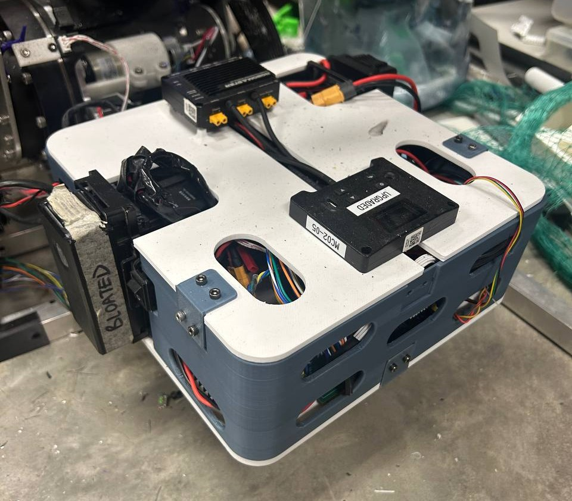
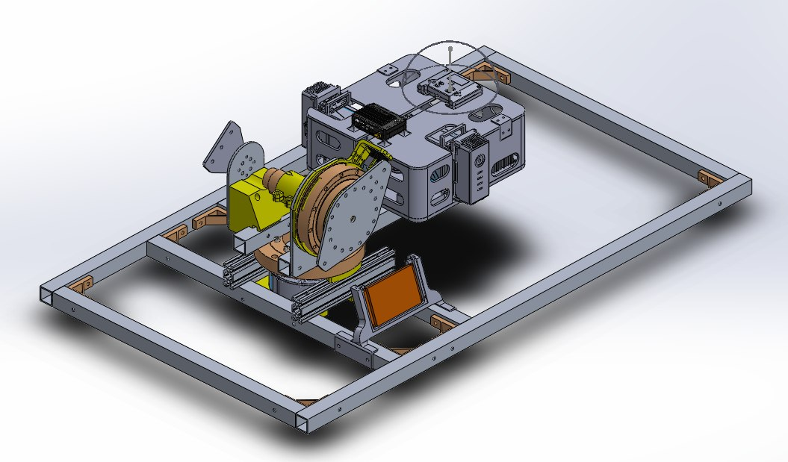

<section id="yawmech" data-aos="fade-left">
    <div class="flex flex-col gap-16 border-b border-zinc-900 pb-16">
        
        <!-- Top row -->
        <div class="flex flex-col md:flex-row items-start justify-between gap-12">
            
            <!-- Left side: title + intro -->
            <div class="flex-1 flex flex-col gap-8">
                <h3 class="text-4xl font-bold text-red-primary uppercase tracking-tighter">
                    Yaw Subsystem Design
                </h3>
                <p class="text-gray-400 text-xl leading-relaxed border-l-2 border-red-900 pl-8">
                    Built to bear the load, tuned to hit the mark. The yaw subsystem controls the yaw positioning of the robot, aiming the projectile
                    at the target.
                </p>
            </div>

            <!-- Right side: image card -->
            <div class="w-48 shrink-0 text-center group">
                <div class="relative mb-4">
                    
                    
                    <div class="absolute -bottom-2 -right-2 bg-red-600 text-[9px] font-black text-white px-2 py-1 rounded uppercase tracking-tighter">
                        Lead Eng
                    </div>
                </div>
                
                <h4 class="text-white font-bold text-xl mb-0">Jian Wen</h4>
                <p class="text-red-primary font-mono text-xs uppercase tracking-widest font-bold mt-1">Y4 ME</p>
            </div>
        </div>

        <!-- Lower content stays stacked -->
        <div class="max-w-4xl">
            <p class="text-zinc-250 text-lg leading-relaxed">
                The yaw subsystem controls the robot’s heading through a single drive system and forms 
                the base frame that supports the upper assembly. In the interim report, load calculations 
                and design considerations were completed to determine the required drive system and rotating 
                platform. The relevant calculations are shown below.
            </p>
        </div>

        <details class="group mt-8">
            <summary class="flex items-center justify-between cursor-pointer list-none rounded-xl border border-zinc-800 bg-black/40 px-6 py-4 text-white font-bold text-xl">
                <span>Yaw Torque Requirement Calculations</span>
                <span class="text-red-primary transition-transform duration-300 group-open:rotate-180">⌄</span>
            </summary>

            <div class="grid grid-cols-1 md:grid-cols-1 gap-4">
                
            </div> 
        </details>

        <div class="max-w-4xl">
            <p class="text-zinc-250 text-lg leading-relaxed">
                A required torque of <strong class="font-bold text-white">53.5 Nm</strong> was obtained from these calculations, 
                the value updated compared to those in the interim report. This value guided the selection of the motor and overall 
                drive system.
            </p>
        </div>

        <div class="max-w-4xl space-y-8">
            <div>
                <h2 class="text-4xl font-bold text-white mb-6">Drive System Considerations</h2>
                <p class="text-zinc-250 text-lg leading-relaxed">
                    A direct-drive system was selected due to its simplicity, ease of maintenance, and lower number of potential failure 
                    points. The <strong class="font-bold text-white">Damiao DL10010L motor</strong> was chosen as the drive motor because 
                    it can meet the required torque demand and integrates well with Calibur Robotics’ existing hardware ecosystem, 
                    which already makes extensive use of Damiao motors. Further details on the selection process have been covered in the 
                    interim report.
                </p>
            </div>

            <div>
                <h2 class="text-4xl font-bold text-white mb-6">Electronics Bay</h2>
                <p class="text-zinc-250 text-lg leading-relaxed">
                    An electronics bay was designed as part of the yaw subsystem to house the electronics and PCBs required for 
                    robot operation. It also serves as a central routing point for the wiring across the robot. The LCD touch screen, 
                    discussed in later sections, is mounted on the robot frame as part of this subsystem.
                </p>
            </div>
        </div>

        <div class="grid grid-cols-1 md:grid-cols-2 gap-4">
            <div class="flex justify-center">
                
            </div>
            <div class="flex justify-center">
                
            </div>
        </div>

        <div class="grid grid-cols-1 md:grid-cols-2 gap-4">
            <div class="flex justify-center">
                
            </div>
            <div class="flex justify-center">
                
            </div>
        </div>

        <div class="max-w-4xl space-y-8">
            <h3 class="inline-block text-2xl text-white font-semibold border-b-2 border-red-primary pb-1">
                Potential Design Improvements
            </h3>
            <p class="text-zinc-250 text-lg leading-relaxed">
                The current electronics bay is not without its flaws, and can be improved by,
            </p>
            <ul class="space-y-3 text-zinc-250 text-lg leading-relaxed pl-6 list-disc marker:text-red-primary">
                <li>
                    Wire routing requires improvement. Wires currently exit the electronics bay through generic 
                    cut-outs, resulting in an untidy layout.
                    <ul class="mt-2 pl-6 list-[circle] space-y-2 marker:text-zinc-400">
                        <li>Solution: Introduce dedicated wire-routing outlets to protect the wires and keep them 
                            neatly routed without interfering with robot motion.</li>
                    </ul>
                </li>
                <li>
                    The electronics bay cover requires improvement. The current design does not provide convenient 
                    access to the internal electronics.
                    <ul class="mt-2 pl-6 list-[circle] space-y-2 marker:text-zinc-400">
                        <li>Solution: Incorporate hinges and locking features so the covers can be opened easily and 
                            held securely when open or closed.</li>
                    </ul>
                </li>
            </ul>
        </div>

        <div>
            <h2 class="text-4xl font-bold text-white mb-6">Final Design of Yaw Subsystem</h2>
        </div>

        <div class="grid grid-cols-1 md:grid-cols-1 gap-6 mb-24 px-4">
            <div class="bg-zinc-950 rounded-2xl border border-red-900/30 p-4 h-[400px] relative">
                <span class="absolute top-4 left-4 z-10 bg-red-600 text-[10px] font-black px-2 py-1 rounded uppercase">Final Direct V3</span>
                <model-viewer src="assets/JW/yaw_direct_V3_.glb" camera-controls auto-rotate shadow-intensity="1" class="w-full h-full"></model-viewer>
            </div>
        </div>
        
        <div class="max-w-4xl space-y-8">
            <p class="text-zinc-250 text-lg leading-relaxed">
                The interactive display above shows the final design of the yaw subsystem. On its own, the subsystem is capable of 
                full rotational motion, except in the sector occupied by the LCD screen. This range of motion is further reduced after 
                integration with other subsystems. However, it still satisfies the yaw range required for the application, namely 
                <strong class="font-bold text-white">2.2° anticlockwise to -7.8° clockwise</strong>.
            </p>
            <p class="text-zinc-250 text-lg leading-relaxed">
                The subsystem is also designed to support the expected load of 15kg from the other subsystems mounted above it.
            </p>
        </div>

        <div class="max-w-4xl space-y-8">
            <h2 class="text-4xl font-bold text-white mb-6">Integration with other subsystems</h2>
            <p class="text-zinc-250 text-lg leading-relaxed">
                The yaw subsystem integrates directly with the pitch subsystem, which supports the launcher and 
                feeder assembly. The figure below shows the integrated system.
            </p>
        </div>

        <div class="grid grid-cols-1 md:grid-cols-2 gap-4 items-center">
            <div class="flex justify-center">
                
            </div>

            <div class="flex justify-center">
                
            </div>
        </div>

        <div class="max-w-4xl space-y-8">
            <p class="text-zinc-250 text-lg leading-relaxed">
                Upon integration with the other subsystems, the range of yaw motion is restricted to a 
                <strong class="font-bold text-white">-10° to 10°</strong> sector, with the 
                0° reference is defined as the launcher being parallel to the yaw frame and pointing in the launch direction of the projectile.
            </p>
        </div>

        <div class="max-w-4xl space-y-8">
            <h2 class="text-4xl font-bold text-white mb-6">Validation and testing</h2>
            <h3 class="inline-block text-2xl text-white font-semibold border-b-2 border-red-primary pb-1">Functionality testing</h3>
            <p class="text-zinc-250 text-lg leading-relaxed">
                Basic functionality testing verified yaw movement. The yaw subsystem moved freely within the 
                <strong class="font-bold text-white">-10° to 10°</strong> range without interference from wires, 
                electronics, or other robot components, and without structural failure.
            </p>
            <p class="text-zinc-250 text-lg leading-relaxed">
                This demonstrates that the dart robot can achieve the required yaw angles of 
                <strong class="font-bold text-white">2.2° and -7.8°</strong> under the RMUC competition rules.
            </p>
        </div>

       <div class="flex justify-center mb-8 max-w-4xl">
            <div class="w-full max-w-lg bg-zinc-950 rounded-2xl border border-zinc-800 p-4">
                <video
                    class="w-full h-auto rounded-xl border border-zinc-800"
                    controls
                    muted
                    playsinline
                >
                    <source src="assets/JW/Yaw functionality.mp4" type="video/mp4">
                    Your browser does not support the video tag.
                </video>
            </div>
        </div>

        <div class="max-w-4xl space-y-8">
            <p class="text-zinc-250 text-lg leading-relaxed">
                Although no immediate failure was observed, repeated use and transport led to fatigue at the standoffs 
                near the frame. In particular, the 3D-printed spacer showed signs of crushing under the weight of the 
                launcher.
            </p>
            <p class="text-zinc-250 text-lg leading-relaxed">
                This did not stop yaw operation, but it reduced aiming accuracy and overall reliability. It may also 
                have contributed to the swaying observed when external force was applied to the robot.
            </p>
            <p class="text-zinc-250 text-lg leading-relaxed">
                A possible improvement is to replace the spacer with a stronger material or revise the print settings 
                and orientation to improve the strength of the 3D-printed part.
            </p>
            <h3 class="inline-block text-2xl text-white font-semibold border-b-2 border-red-primary pb-1">Validation: Repeatability</h3>
            <p class="text-zinc-250 text-lg leading-relaxed">
                A controlled test was conducted to validate yaw repeatability. This is important because the robot 
                must return to the same yaw angle each time it aims at the target structure.
            </p>
            <p class="text-zinc-250 text-lg leading-relaxed">
                The yaw motor was controlled directly, and angular data was read from the motor through the development 
                board using live expressions in STM32CubeIDE. A zero position was first defined at the centre, with the 
                launcher parallel to the yaw frame. The yaw was then moved away from zero before being commanded back to 
                the target angle, and the final angle was recorded.
            </p>
            <p class="text-zinc-250 text-lg leading-relaxed">
                The test was repeated 10 times. An acceptance criterion of 1% deviation was used, since small yaw errors 
                can lead to large target deviations. The following shows the results of the test.
            </p>
        </div>

        <div class="max-w-4xl space-y-8">
            
        </div>

        <div class="max-w-4xl space-y-8">
            <p class="text-zinc-250 text-lg leading-relaxed">
                The results show good repeatability. The mean final angle matched the target closely, and the 
                standard deviation was low. Apart from the first repetition, all trials had less than 0.3% deviation 
                from the mean. These results show that the yaw subsystem meets the repeatability requirement.
            </p>
        </div>

        <div class="max-w-4xl space-y-8">
            <h3 class="inline-block text-2xl text-white font-semibold border-b-2 border-red-primary pb-1">Validation: Accuracy</h3>
            <p class="text-zinc-250 text-lg leading-relaxed">
                Accuracy testing was conducted to determine whether the yaw subsystem could reach the required target 
                angles for aiming. Accurate yaw positioning is needed to direct the projectile towards the target 
                structure.
            </p>
            <p class="text-zinc-250 text-lg leading-relaxed">
                For each test, a zero position was first defined. The yaw motor was then commanded to a target angle 
                referenced from this zero position, and the final yaw angle was measured before returning to zero. 
                This was repeated 10 times for each target angle, -7.8° and 2.2°. Results are shown below.
            </p>
        </div>

        <div class="grid grid-cols-1 md:grid-cols-2 gap-4">
            <div class="flex justify-center">
                
            </div>
            <div class="flex justify-center">
                   
            </div>
        </div>

        <div class="max-w-4xl space-y-8">
            <p class="text-zinc-250 text-lg leading-relaxed">
                The acceptable deviation was set at 0.2°, since small angular errors can produce large positional 
                errors at the target distance of 26 m. Although the percentage difference between target and measured 
                angles was no more than 2.1%, the absolute deviation reached up to 2°. The yaw subsystem therefore did 
                not meet the required accuracy standard.
            </p>
            <p class="text-zinc-250 text-lg leading-relaxed">
                This shortfall is significant because even small yaw errors can cause the projectile to miss the 
                target, especially given the small target plate size. It should also be noted that these results 
                were recorded before PID tuning. The smaller deviations observed in the 2.2° tests, where a higher 
                Kp value was used, suggest that controller tuning could improve accuracy. Further tuning and validation 
                are still required.
            </p>
        </div>
    </div>
</section>